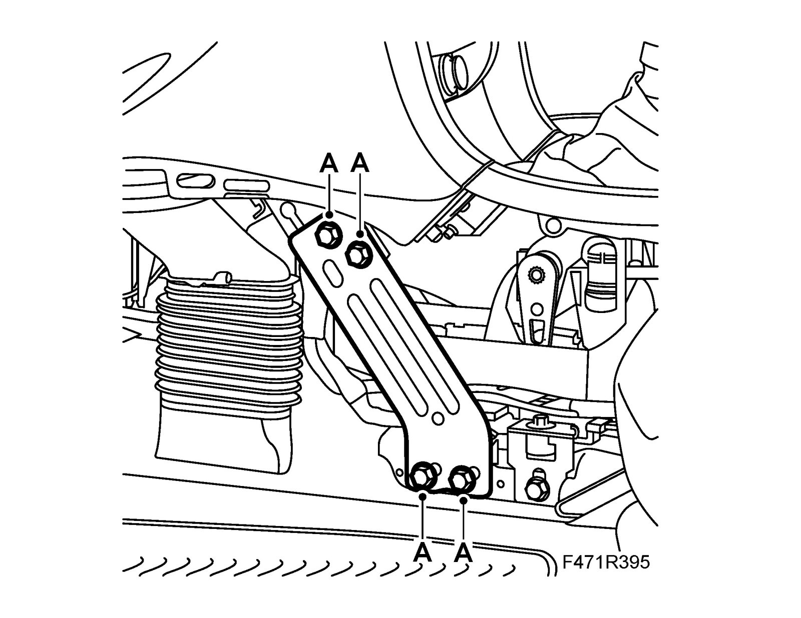
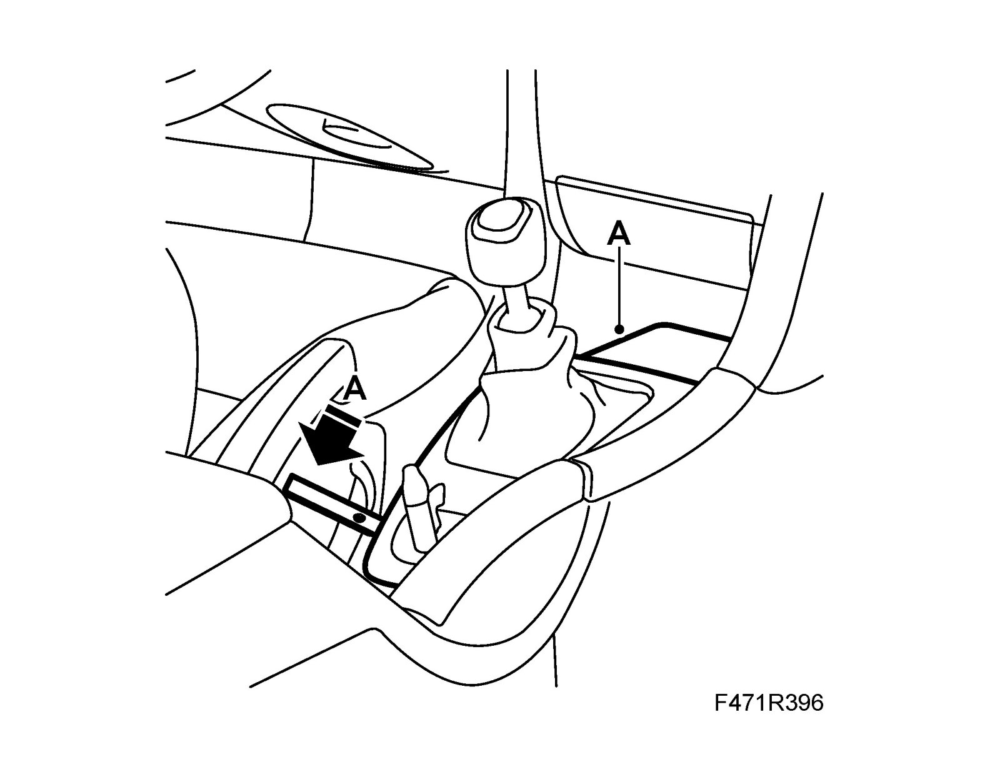
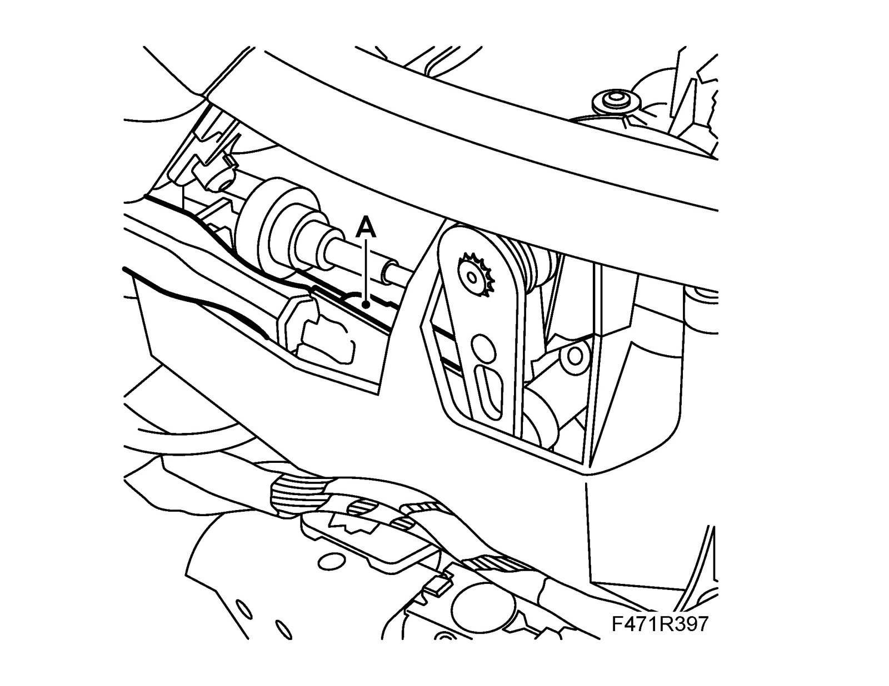
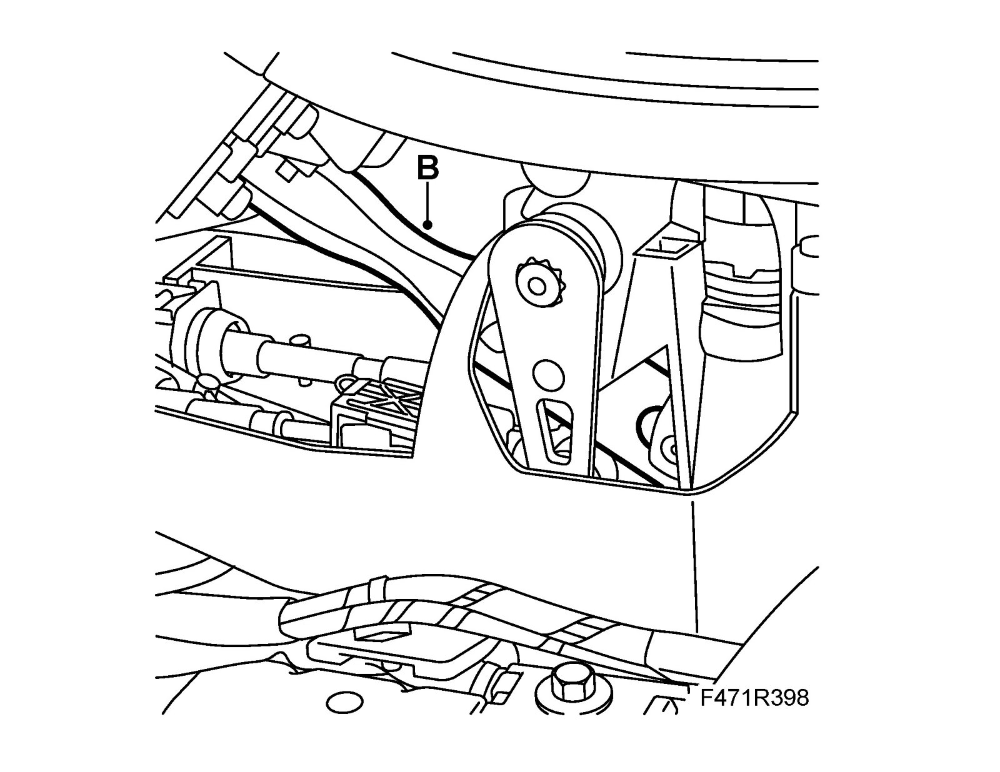
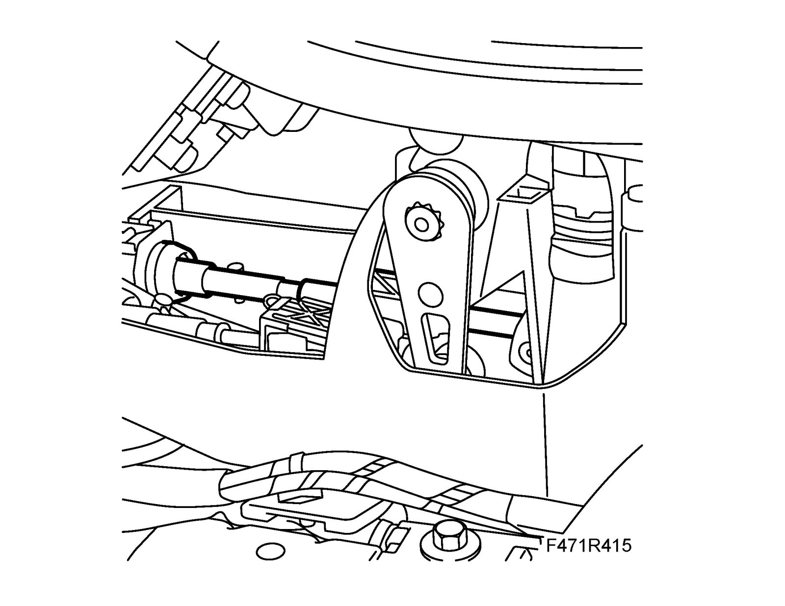
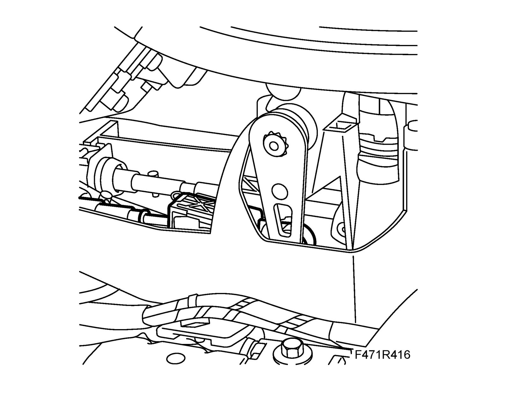
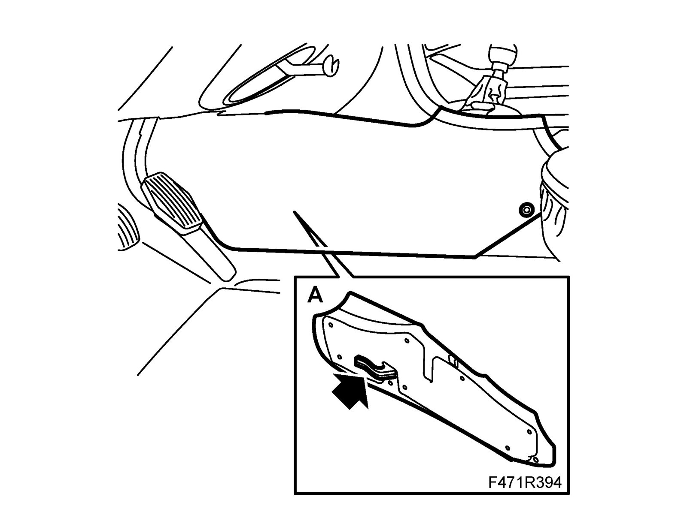

Clamping Piece, Gear Cable
Clamping piece, gear cableTo remove
1. Remove the floor console's front side pieces on the driver's side (A).

2. Remove the floor console's left-hand lower support (A).

3. Remove the cover from over the gear lever housing (A), use 82 93 474 Removal tool in the rear edge of the cover and pull back. Press down a screwdriver blade carefully in the cable adjuster and pry slightly towards the gear lever. A click will be heard when the adjuster catch has disengaged. Repeat the procedure on the other cable adjuster.

4. Remove the clamping piece (A) carefully from the gear lever using KM-6065 Removal tool (cable clamp: movement right/left)

5. Remove the clamping piece (B) carefully from the gear lever using KM-6065 Removal tool (cable clamp: movement forward/backward)

To fit
1. Fit the clamping piece (cable clamp: movement forward/backward). Insert the cable in the clamping piece. Press in the clamping piece on the ball end.

2. Fit the clamping piece (cable clamp: movement right/left). Insert the cable in the clamping piece.

3. Fit the floor console's left-hand lower support (A).

4. Fit the floor console's front side pieces on the driver's side (A).

5. Adjust gear cables as described under Adjusting gear cables 6-speed. Adjustments